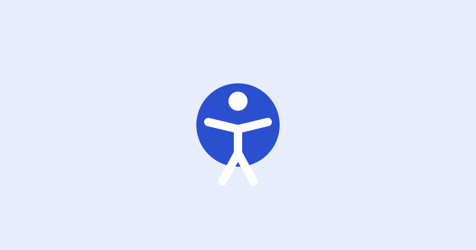

Accessibility
A practical guide to WCAG 2.2 for product teams
WCAG 2.2 added nine success criteria. Most teams already meet some of them; a few need deliberate design. Here is what matters most.
What is new in 2.2
The new criteria focus on keyboard users, people with motor impairments and people with cognitive disabilities. The most impactful for product teams are focus visibility, target size and accessible authentication.
- 2.4.11 Focus Not Obscured: sticky headers must not hide the focused element.
- 2.5.8 Target Size: interactive targets of at least 24 by 24 CSS pixels.
- 3.3.8 Accessible Authentication: no cognitive tests to sign in; allow paste and password managers.
Keep focus visible
Use scroll-padding-top so the browser scrolls focused elements clear of a sticky header:
html {
scroll-padding-top: calc(var(--header-height) + 1rem);
}
:focus-visible {
outline: 3px solid var(--color-focus);
outline-offset: 2px;
}Size targets generously
The minimum is 24 pixels, but 44 pixels is far easier to hit on a phone. These templates use a --target-size token of 2.75rem.

Make sign-in effortless
If a password manager cannot fill your sign-in form, it probably fails 3.3.8.
Use correct autocomplete values, allow paste, and offer a show-password toggle. See the sign-in template for a working example.
Sprint checklist
- Tab through every new screen with the keyboard only.
- Check focus is never hidden behind sticky elements.
- Measure targets; aim for 44 pixels.
- Run the automated audit, then test with a screen reader.